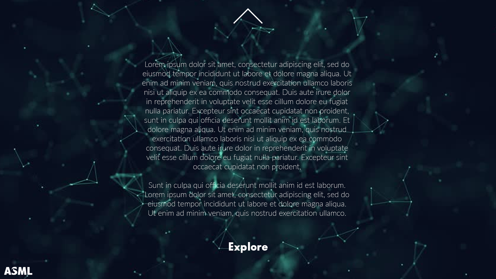
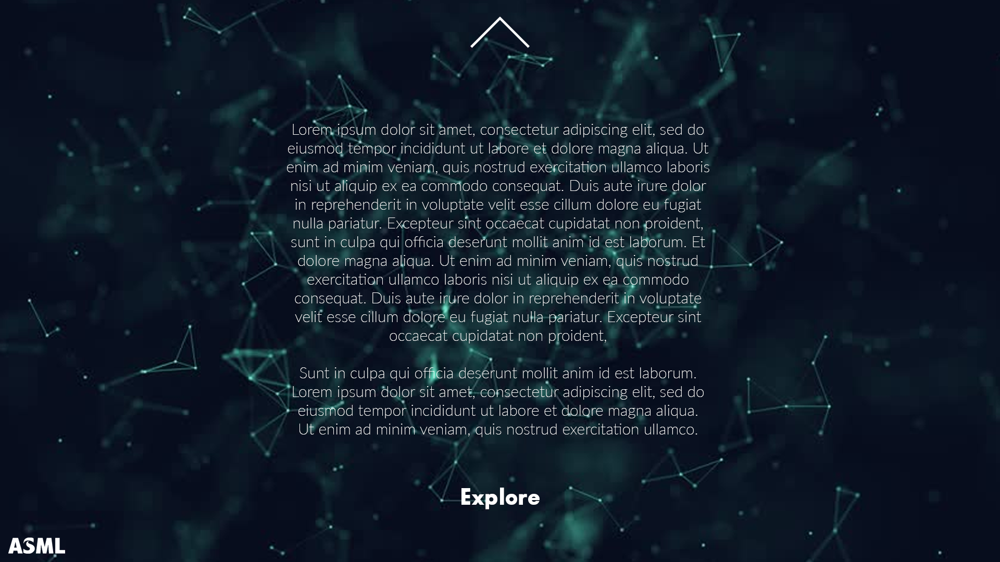

Concepting
In het begin van het semester moest er gebrainstormd worden over een concept. Hierin hebben ik en de groep in de eerste week een start mee gemaakt door 250 ideeën te bedenken op het gebied van marketing. Het was zo dat de eerste 3 weken elk een eigen onderwerp had, waaronder de eerste week marketing, de tweede week techniek, en de derde week ook maar heb ik echter voor iteratie gekozen van mijn voorgaande concept ideeën in de eerst 2 weken. Bij het maken en bedenken van een concept moet er ook rekening gehouden worden met de doelgroep. De doelgroep was al gegeven aangezien ASML het heeft voorzien in een briefing. Echter wilde ik en de groep wel weten wat de interesses/mening zijn van onze doelgroep. Dit valt terug te vinden in het doelgroep onderzoek.

Conceptueel Denken
Nadat allen ideeën op het bord zijn gezet en de input van de doelgroep duidelijk was, zijn we als groep begonnen met brainstormen en het maken van concepten. Elke groep moest aan het einde van de week met 5 concepten opleveren, dat betekende elk groepslid 1. In de eerste weken ben ik dus ook begonnen met het omzetten van ideeën naar een concept. Er is mij aangeleerd om dit te doen vanuit de slaap, ontwaak en leven strategie. Dit houdt in:

Vanuit deze strategie zijn dus ook de volgende concepten uit ontstaan.
Uitblinken ConceptHet eerste concept wat dus in de eerste week van mij tot stand is gekomen is het uitblinken concept. Dit concept sluit zich aan op de belofte dat ASML je in het spotlicht zet als jij als uitblinkende student daar komt te werken. In mijn ogen vond ik dit een goed concept. Dit komt doordat ik de studenten natuurlijk centraal heb gezet maar dat ik ze met dit concept echt naar voren wil brengen. Uit het doelgroep onderzoek was dus ook gebleken dat studenten zich maar een nummertje voelen binnen grote bedrijven. Door ze juist met dit concept te overtuigen en duidelijk te maken dat ze het spotlicht zijn als je komt werken bij ASML, dat er meer uiteindelijk meer aanmeldingen zullen plaats vinden. Echter was uitblinken niet concept maar eerder een idee hoe de student naar voren wilt brengen. Hier is later een iteratie op gedaan in het groei concept.
 Immersie Concept
Immersie Concept
Het tweede concept wat in de tweede week bij mij tot stand is gekomen is het immersie concept. Dit concept moest een link/focus hebben op het technische gedeelte van ASML. Het immersie concept is dus tot stand gekomen aangezien er in de tweede week weer nieuwe concepten bedacht moesten worden omtrent ASML. Tijdens dit concept ben ik een quote tegen gekomen van ASML die zegt: "At ASML we bring together the most brilliant and offer them the ultimate challenge to solve complex technical problems. Every day we dare you to push your limits”. Om complexe problemen op te lossen moet je jezelf steeds in het probleem verdiepen wil je het kunnen oplossen. Dit sluit aan bij het doelgroep onderzoek waaruit is gebleken dat studenten zich graag verder willen ontwikkelen tijdens een baan/stage. Doordat je steeds opnieuw in een probleem moet verdiepen ben je steeds aan het leren en jezelf dusdanig ook verder aan het ontwikkelen. Ergens in verdiepen heet dus ook wel Immersie.
 Groei Concept
Groei Concept
Na het maken van de vorige concepten in de voorgaande weken was het de bedoeling om weer met nieuwe concepten te komen. Echter was dit zeer overbodig en werd er de keuze gegeven om verder met een concept te gaan die er al stond. Omdat ik het conceptueel denken goed wilde aantonen had ik er voor gekozen om mijn aller eerste concept te verbeteren. Aan de hand van de gegeven feedback op het uitblinken concept (Het is eerder een idee dan een concept) is concept omgezet naar het groei concept. Ik ben tot het groei concept tot stand gekomen omdat ASML jou de mogelijkheid biedt om te groeien. Dit is weliswaar niet duidelijk bij de meeste studenten is gebleken uit de doelgroep onderzoek, maar dit valt goed te benadrukken binnen het groei concept. Ook omdat er uit de doelgroep onderzoek is gebleken dat studenten zich willen blijven ontwikkelen en groeien binnen hun stage/baan vind dit concept daar goed bij passen. Hierbij is dus uitblinken eraan vast gezet als bijvoorbeeld een idee hoe je dit wilt waar maken.
Vanuit het conceptueel denken (doormiddel van het slapen, ontwaken en leven strategie) heb ik er weer iets mooi bij geleerd. De strategie heeft mij geholpen om door in begin van je concept fase al meteen een link te leggen tussen de verschillende onderdelen van je concept. Zo ga je al meteen nadenken over wat de belofte is van je concept en hoe je dit naar voren gaat brengen. Met deze strategie kan je zien (en later ook) in een mooie route hoe je concept tot stand is gekomen. Vanuit welke kernwoorden, je belofte en je ideeën daarbij. Zeer zeker iets wat ik zal meenemen in mijn komende jaren als het gaat om goed concepten bedenken.
SCO & UX Testplan
Voordat er überhaupt getest kon worden en het bedenken van concepten moet je natuurlijk eerst weten wie je doelgroep is en weten waar ze geïnteresseerd zijn. Echter was de doelgroep al een beetje gegeven door ASML zelf in een briefing naar waar zij op zoek zijn, uitblinkende technische studenten, millennials.
Door middel van een open enquête met ongeveer 6 kritische vragen wilden we erachter komen wat studenten/starters het belangrijkste vinden in het zoeken van een stage of baan. Op deze manier kon ik en de groep in korte tijd een grote groep interviewen en kwamen we achter kritische informatie. Door iedereen individueel op pad sturen en 5 mensen te interviewen kregen we in totaal 30 deelnemers. De vragen luidde:
Zie hieronder het volledige testplan plus een voorbeeld van een afgelegde Interview. Overigens is het testplan niet gemaakt door mezelf maar in samenwerking met de groep. Toch laat ik het zien om een overzicht te krijgen over wat er getest werd. Na het testplan en de interview volgt de conclusie plus persona gebaseerd op het uitgevoerde onderzoek.


Resultaten
Nadat we iedereen z’n enquêtes bij elkaar hebben gelegd en overeenkomsten hebben uitgezocht zijn deze punten eruit gekomen:
Met de gegeven resultaten kon ik er een conclusie van maken zodat we wisten waar de doelgroep in geïnteresseerd is.
Conclusie
Kort samengevat weten ik en de groep nu waar de doelgroep in geïnteresseerd is als het gaat om stage/baan zoeken. Studenten gaan sneller naar een klein bedrijf omdat ze zich maar een nummertje voelen in grote bedrijven bijvoorbeeld ASML. Studenten vinden het belangrijk om zichzelf te kunnen ontwikkelen tijdens hun stage en dat ze daar de vrijheid in krijgen. Echter is dit niet altijd duidelijk bij grote bedrijven. Door de media campagne op deze resultaten af te stemmen pak ik samen met de groep de doelgroep vast op hun interesses.
Persona
Na het onderzoek gedaan te hebben en tot een conclusie gekomen te zijn wilde ik nog graag een persona hebben zodat ik en de groep een goed beeld kregen hoe onze doelgroep eruit zag naast hun interesses.


Slapen - Ontwaken - Levend
Het immersie concept is tot stand gekomen aangezien er weer nieuwe concepten bedacht moesten worden omtrent ASML. ASML zegt “At ASML we bring together the most briljant and offer them te ultimate challenge to solve complex technical problems. Every day we dare you to push your limits”. Om complexe problemen op te lossen moet je jezelf verdiepen in het probleem wil je het kunnen oplossen. Ergens in verdiepen heet ook wel Immersie.
Slapen - Ontwaken - Levend
Na het maken van de vorige concepten was het de bedoeling om weer met nieuwe concepten te komen. Echter werd er ook de keuze gegeven om verder met een concept te gaan die er al stond. Aan de hand van de feedback wat op het “Uitblinken” concept is gegeven (omtrent dat het eerder een idee is dan een concept) is het een idee geworden van het Concept “Groei”. Omdat ASML jouw de mogelijkheid biedt om te groeien binnen het bedrijf zal het concept “Groei” dit benadrukken. En dit kan bijvoorbeeld met uitblinken.
Definitief Proftaak Concept
Na het pitchen en presenteren van de concepten bij DigitasLBI hebben we als groep feedback ontvangen. Ze vonden dat onze concepten potentie hadden en dachten dat we misschien iets konden combineren. Het ging hier om de concepten Ontdekken (Kai) en mijn concept onmisbaar. Ik heb dus hier samen met de groep de keuze gemaakt om deze twee te combineren.
Ontdekken en Creëren van een nieuwe wereld
ASML maakt machines die 90% van de chips wereldwijd produceren. Zij hebben indirect te maken met bijna alle producten waar een chip in zit. Als ASML zou wegvallen zullen er ook geen machines meer gemaakt worden voor nieuwe chips. Tegenwoordig zit overal wel een computerchip, dat we bijna niet meer zonder kunnen. Maar ASML zelf kan ook niet zonder haar werknemers.
Denk maar eens aan de ontdekking van Amerika. Christoffel Columbus staat bekend voor zijn grote ontdekking Amerika. Echter heeft Christoffel Columbus dit niet alleen gedaan. Dit was nooit mogelijk geweest zonder een schip, maar wie heeft voor het schip gezorgd of wie heeft het bedacht.
Neil Armstrong was de eerste man op de maan, maar was niet alleen verantwoordelijk voor de maanlanding. Hij had een team waarmee hij opereerde en de reis mee begon. NASA verzorgde de training, materiaal, planning, shuttle, berekende alles wat er maar te berekenen viel. Dit geldt voor elke ontdekking of achievement die tot nu op de wereld heeft plaatsgevonden.
Dit wil zeggen dat ASML ook indirect verantwoordelijk is voor het creëren van een nieuwe wereld. Een toekomst vol nieuwe techniek, nieuwe gadgets, robots, vliegende auto’s, de opties zijn eindeloos.
Omdat er uit het doelgroep onderzoek is gebleken dat studenten er aan toe willen doen binnen een groot bedrijf heb ik en zowel de groep daar rekening mee gehouden. Wat wij als groep hiermee duidelijk willen maken is dat jij als student een belangrijke rol kan spelen bij het creëren, ontdekken, van deze toekomst. En dat ASML jou nodig heeft om dit te bereiken.

Onmisbaar Concept
In de laatste concept week (waar mijn iteratie heeft plaats gevonden) moest er nagedacht worden over de final concepten die uiteindelijk gepresenteerd zouden moeten worden bij de opdrachtgever. Voordat dit gebeurde moest er eerst individueel gepitched worden binnen de groepen om zo de uiteindelijke 2 concepten te kiezen. Echter is tijdens deze groep pitch iets spontaan nieuws gekomen. Het onmisbaar concept.
Tijdens de pitch was ik aan het denken hoe essentieel ASML eigenlijk wel is over heel de wereld. ASML maakt chip-machines die 90% van de computerchips wereldwijd maken. Als ASML zou wegvallen zullen er ook geen machines meer gemaakt worden voor nieuwe chips. Tegenwoordig zit overal wel een computerchip, dat we bijna niet meer zonder kunnen. Maar ASML zelf kan ook niet zonder haar werknemers. Hierbij wilde ik dus duidelijk maken dat jij als student/potentiële werknemer er aan toe doet in het bedrijf als je er komt werken/stage lopen. Omdat ASML essentieel in de wereld staat, heeft het hard haar werknemers nodig. En om zo de student het gevoel te geven dat zij er aan toe doen binnen het bedrijf, pakte ik meteen een interesse punt van de studenten wat is gebleken uit de doelgroep onderzoek.
Nadat ik dit verteld had en de groep akkoord gaf sprong Mauro meteen in om mij met dit last minute concept te helpen realiseren. Zie hieronder het concept plus de bij bedachte last minute ideeën die begrip onmisbaar kunnen uitbeelden.

Presentatie
Dit concept werd dus ook mee gepresenteerd bij de opdrachtgever in de eerste paar weken. Aangezien we een presentatie moesten geven waren visuals cruciaal. Dit ook omdat ik ervoor had gekozen om een presentatie te maken met alleen maar visuals. Hieronder zie je de presentatie link plus de 2 visuals die ik snel heb gemaakt voor de presentatie. Wat ik daar heb gedaan is als het ware een quote neergezet met daarachter een bijbehorende afbeelding. Ik heb voor apocalyptische afbeeldingen gekozen om zo een versterk beeld te geven van wat de gevolgen zijn als iets essentieels zou wegvallen in onze wereld, zoals elektriciteit of stoplichten. De apocalyptische beelden zorgen ook voor de link tussen de quote en de achtergrond dat ze elkaar mooi versterken omdat ze met elkaar te maken hebben.


ZMOT Analyse Onmisbaar Concept
Na het final maken van je concept moet er ook nagedacht worden over hoe je jouw doelgroep kan bereiken/prikkelen maar ook of de klantvraag beantwoord wordt. ASML wilt uitblinkende studenten binnenhalen alleen weten ze niet hoe. Echter willen studenten niet bij ASML stage lopen omdat ze denken dat ze daar maar een nummertje zijn. In tegenstelling tot maakt ASML wel de belofte dat jij je als student zich verder kan ontwikkelen binnen het bedrijf. Door het combineren van de probleemstelling en de interesses van de doelgroep kan hiervan een overzicht gemaakt worden. Op deze manier wordt de belofte van ASML nagegaan en wordt het geen wat voor de doelgroep onduidelijk was duidelijker. Dit heb ik gedaan aan de hand van Google haar ZMOT methode. ZMOT raakt voornamelijk drie behoeften:
ZMOT leidt tot essentiële keuzes:
ZMOT valt in de volgende fases te doen:


Wat heb ik geleerd?
De belangrijkste bronnen voor klanten gedurende ZMOT zijn zoekresultaten, internetfora, vergelijking sites, peer reviews en sociale media. ZMOT speelt zich online en real-time af, met de klant aan het stuur. Door hieraan middelen te koppelen maak je het voor jezelf al duidelijk waar de klant/gebruiker laten mee te maken zal krijgen tijdens elke fase Door dit eerst voor je concept te bepalen kan er later in een media strategie een customer journey gemaakt worden omtrent de fases en bijbehorende middelen. Echter staan de middelen bij deze ZMOT er niet bij omdat we in deze periode concepten gingen samenvoegen waardoor deze ZMOT er niet meer aan toe deed bij de proftaak. Maar toch heb ik het erin gezet omdat ik wil laten zien dat ik heb geleerd om te kijken naar verschillende communicatie strategie fases die erbij komen kijken bij het concept. Aangezien ik hier geen middelen erbij gezet heb ik hierop een iteratie gedaan bij de ZMOT analyse van het proftaak concept.
ZMOT Analyse Proftaak Concept
Nadat de concepten waren samengevoegd moest er ook hier nagedacht worden over hoe je de doelgroep kan bereiken/prikkelen maar ook of de klantvraag beantwoord wordt. ASML wilt uitblinkende studenten binnenhalen alleen weten ze niet hoe. Echter willen studenten niet bij ASML stage lopen omdat ze denken dat ze daar maar een nummertje zijn. In tegenstelling maakt ASML wel de belofte dat jij je als student zich verder kan ontwikkelen binnen het bedrijf en dat ASML je nodig heeft. Door het combineren van de probleemstelling en de interesses van de doelgroep kan hiervan een overzicht gemaakt worden. Op deze manier wordt de belofte van ASML nagegaan en wordt het geen wat voor de doelgroep onduidelijk was duidelijker. Dit is ook gedaan aan de hand van Google haar ZMOT methode. Echter heb ik hier bijdrage geleverd bij de middelen aangezien ik daar niet mee bezig was geweest bij mijn vorige ZMOT analyse. ZMOT raakt nog steeds voornamelijk drie behoeften:
ZMOT leidt tot essentiële keuzes:
ZMOT valt in de volgende fases te doen:
ZMOT Analyse
Fase 1 Stimulus: ImagoEen campagne om het Imago te versterken. Studenten kennis laten maken met ASML.
Veel mensen weten niet precies wat ASML doet en potentiële werknemers hebben het idee dat ze maar een nummer zijn bij ASML, en dat het lopendebandwerk is
Op nieuwe manieren potentiële werknemers overtuigen dat ze deel uit kunnen maken van het ontdekken en creëren van een nieuwe wereld.
Studenten zullen solliciteren bij ASML aan de hand van de gegeven informatie van de campagne.
Of de werknemer zich een nummer voelt of deel van het bedrijf is aan de hand van de gegeven ZMOT
Wat heb ik geleerd?
Dit keer heb ik me strikt gefocust en bijdrage geleverd op de middelen die er gebruikt zou kunnen worden bij het concept om zo te bepalen wanneer de doelgroep ermee in aanraking komt. Op deze manier heb ik geleerd hoe, waar en wanneer je jouw middelen moet toepassen wil je de doelgroep goed bereiken. Deze gehele methode van ZMOT tot aan Middelen is nieuw voor mij geweest, maar na dit semester is het wel een fijn leer moment geweest aangezien ik nu weet hoe ik concepten waterdicht en ijzersterk kan maken doormiddel van een ZMOT analyse.
Customer Journey
Vanuit de ZMOT analyses zijn er middelen gekomen die ervoor moeten zorgen dat de doelgroep in aanmerking komt de verschillende fases. De customer Journey visualiseert alle contactmomenten/kanalen die de klant/gebruiker meemaakt. Dit proces strekt van het moment dat de klant in aanraking komt met ons concept tot de klant aankomt bij ons einddoel. In deze Customer Journey heb ik bijdrage geleverd met betrekking tot de game wat het idee erachter is, wat er op de website komt en de uiteindelijke Customer Journey visualisatie.
Doel van de Campagne:Studenten laten solliciteren voor een baan of stage bij ASML.
Boodschap van de Campagne:We hebben jou nodig bij het ontdekken van de toekomst.
Pay-Off:Discover Tomorrow/ Be part of the unexplored future!
Campagne FasesOnze campagne bestaat uit twee fases voor het moment van sollicitatie(doel). Dit zijn de awareness & familiarity fase en de consideration fase. Deze fases zijn gebaseerd op de ZMOT methode.
Fase 1: Awareness & Familiarity
Doel:Naamsbekendheid creëren bij de doelgroep en de doelgroep kennis laten maken met het bedrijf/merk.
Idee: Exploration GameOnze boodschap luidt: “Wij hebben jou nodig om samen de toekomst te ontdekken”. Grote technologische ontwikkelingen zijn niet zomaar uit de lucht komen vallen, er zijn veel dingen aan vooraf gegaan.Dit willen we duidelijk maken via een site, maar ook door middel van een game. Zo willen we laten zien dat je samen aan de toekomst werkt.
Het spel wordt gebruikt om onze boodschap over te brengen naar de doelgroep. Dit doen wij door de nadruk te leggen op voorgaande ontwikkelingen die nodig zijn geweest om tot de hedendaagse ontwikkelingen te komen. Het idee hierachter is dat de puzzels en -of kamers opgelost moeten worden zodat het volgende tweetal in de andere kamer verder kan met de aanwijzing of puzzelstuk die de voorkaandge kamer doorgeeft
Als de eerste kamer zijn/haar opdracht niet oplost, kan de tweede puzzel/kamer niet verder. Dit maakt duidelijk dat je afhankelijk van elkaar bent, en dat je het spel samen aan het spelen bent. Het onderwerp of de categorie van de kamer wordt aan het begin vrijgegeven zodat het team de “right person for the job kunnen kiezen”.
Fase 2: Consideration
Doel:In deze fase willen we alles uit de kast trekken om studenten over te halen om te gaan solliciteren. We willen dus erg veel aandacht trekken.
Idee: WebsiteOp de website willen we benadrukken dat jij een belangrijke rol kan spelen bij de volgende ontdekking. Hier richten wij ons op relevante ontdekkingen en technieken die binnenkort ook mogelijk zouden kunnen zijn. Een aantal weken terug heeft ASML een contract getekend voor zelfdenkende chips. Het zou dus niet zo gek zijn om te denken dat er binnenkort AI’s ( artifical intelligence ) geïntegreerd worden in de samenleving.
Een ontdekking doe je niet alleen. Hiervoor heb je meerder mensen nodig. Net als vroeger toen Christoffel Columbus Amerika ontdekte waren er veel meer mensen verantwoordelijk voor de ontdekking. Denk aan de bemanning, financiën, scheepsbouwers, leveren van materiaal enzovoort. Door deze ontdekking hebben er veel meer ontdekkingen plaatsgevonden, dat wil ook zeggen als Amerika niet ontdekt werd er veel andere ontdekkingen ook niet mogelijk waren.
Voordat de nieuwe ontdekking AI plaatsvindt hebben er veel meer ontdekkingen plaatsgevonden om dit doel te kunnen bereiken. Denk aan stoom machines, elektriciteit en andere chips. Maar ook bijvoorbeeld een Drone wat daar vooraf gaan voor nodig is geweest. Dit is dus ook wat ik uitbeeld op de website.
Op de website staan huidige technologische hoogstandjes die een impact hebben op de samenleving. Als men op een onderdeel klikt, krijgt de gebruiker enkele onderdelen te zien die nodig zijn geweest om het technologische hoogstandje te ontwikkelen. Dit geeft de boodschap door dat je andere mensen en ontdekkingen nodig hebt om een nieuw doel te bereiken. Ook laat ik zien wat ASML er mee te maken heeft gehad omtrent het desbetreffende product.
Wij ( ASML ) hebben JOU nodig om samen de toekomst te ontdekken.
Promotie Producten
Video & PosterDit doen we door middel van posters en teaser video’s te maken. Dit verspreiden we via social media en hangen we op rond het Tu/e. Dit doen we omdat hier onze doelgroep is. Social media dat we gebruiken zal zijn : Facebook, LinkedIn, snapchat en Instagram. Hier hebben we voor gekozen omdat hier de meeste studenten actief op zijn en we zo de meeste studenten kunnen bereiken.
De video is er om het evenement/game te promoten. Wat de datum, locatie en wat er te doen is. Het kan bijvoorbeeld dus ook een showreel zijn van de game waar het zich zal plaatsvinden.
De posters zijn er voor naamsbekendheid van het concept. Hier laten we zien dat wij jou nodig hebben om de toekomst te ontdekken, en via de posters wordt je geleid naar de website en game. Dit doen we ook al in deze fase zodat we een zo groot mogelijk publiek aanspreken. Dit is dus de fase waar we ons product en ASML bekendmaken.
--> Game Fase
De volgende fase is het daadwerkelijke evenement/game. De game wordt gespeeld met 4 man. Hier benadrukken we de samenwerking die nodig is om samen een doel te bereiken. Net zoals dit gebeurd in de werkomgeving van ASML. De opdrachten die je moet doen zijn uitdagend en passen bij ASML, en de producten waar zij indirect verantwoordelijk voor zijn. Hier wordt je dus onbewust geïntroduceerd met producten waar jij invloed op kunt hebben. De opdrachten worden in overleg met ASML personeel gemaakt. Dit is een perfecte kans om de meest geschikte kandidaten te onderscheiden. ASML zoekt namelijk the best of the best.
De technische student is bang om verkeerde keuzes te maken. Dit hebben we gehoord tijdens de feedback ronde van een ASML recruiter? bij digitas. Hier kunnen we gebruik van maken door de student te belonen als je de game als groep haalt. De beloning kan dan een meeloop traject zijn. Op deze manier weet jij of dit jou plek is.Niet iedereen kan winnen. Echter krijgt iedereen wel een link naar onze website.
--> Website FaseOp de website wordt je geïntroduceerd aan allerlei producten waar ASML indirect verantwoordelijk voor is. Hier laten we zien dat als je bij ASML werkt je een belangrijke rol hebt. Hier wordt dus meer duidelijkheid gegeven aan de producten waar je eerder bloot aan bent gesteld. De website wordt een experience waar je ge-enthousiasmeert en getriggerd wordt door toekomstige en huidige ontdekkingen en beelden waar jij verantwoordelijk voor kan zijn en natuurlijk ook een beetje status. Werken bij een van de grootste technische bedrijven.
Na het doorlopen van de website wordt je verwezen naar de vacaturewebsite van ASML. Op deze manier stroomt ons publiek door naast ASML.Website

Wat heb ik geleerd?
Met de Customer Journey heb ik geleerd hoe ik de middelen vanuit de ZMOT analyses zo kan neerzetten en beschrijven dat ik een goed beeld schets hoe de klant/gebruiker de fases doorloopt. Hier komt ook bij kijken of een bepaalde middelen wel überhaupt nut hebben. Ook heb ik hier geleerd dat je goed moet nadenken en kijken hoe je alles met elkaar verbind, wanneer je ze moet inzetten en hoe je andere middelen met elkaar kan samenvoegen. Als het ware sta je in de voeten van de klant/gebruiker en ga je nadenken hoe hij/zij alle contactmomenten voorbij gaat. Ik heb dit voorheen nog nooit zo uitgebreid gedaan maar ik zie nu wel in wat voor voordelen het met zich mee brengt. Aan de hand van de Customer Journey weet je welke fases er zijn en wat daarvoor nodig is. Het geeft een zeer duidelijk beeld wat de gebruiker dus doorloopt.
Workshop & Visuals
Na een workshop te hebben gekregen omtrent het designen van posters met een boodschap erin ben ik hiermee aan de slag geweest. Tijdens de workshop werd dit gedaan aan de hand van een voobeeld autisme een redesign te geven. Het idee was hoe je autisme in een poster kon overbrengen door goed beeldgebruik of een slogan met de juiste typografie.
Ik heb dit op 2 manieren gedaan. In één visual is er gebrek aan woordgebruik maar probeer ik het over te brengen met alleen visuals. Het idee hierachter was om autisme over te brengen met beeld omtrent kleuren. Het is bekend dat mensen met autisme kleuren anders zien. Dit wilde ik toepassen in mijn poster door de poster zo te maken dat normale mensen kleuren zien hoe mensen het met autisme zien.

De andere visual is een puur snelle redesign omtrent tekstgebruik/slogan.

Het gebruik van tekst, font, plaatsing etc. is allemaal onderdeel van typografie. Typografie is in mijn ogen zeer belangrijk. Door hierin beter worden hebben we hiervan ook een workshop gehad. Het idee was om van woorden beeld te maken. In principe spelen met je woorden.


Echter is er hiervan al een combinatie van gemaakt voordat de workshops gegeven werden. Al hoewel ze niet perfect waren ging het wel om hetzelfde principe. Beeldgebruik en typografie. Deze visuals waren nog van mijn eerste concept onmisbaar waar de tekst versterkt werd door de visuals om de boodschap over te brengen. Wat ik daar heb gedaan is als het ware een quote neergezet met daarachter een bijbehorende afbeelding. Ik heb voor apocalyptische afbeeldingen gekozen om zo een versterk beeld te geven van wat de gevolgen zijn als iets essentieels zou wegvallen in onze wereld, zoals elektriciteit of stoplichten. De apocalyptische beelden zorgen ook voor de link tussen de quote en de achtergrond dat ze elkaar mooi versterken omdat ze met elkaar te maken hebben.
Ook zijn er visuals gemaakt omtrent het definitief concept. Aangezien er als groep besloten was om de proftaak ASML game ook als PR-Stunt te doen moest er ook hiervan visuals gemaakt worden. Ik had dit op me genomen zodat we bij de opdrachtgever een beeld konden schetsen met wat ik en de groep bedoelen met de PR-stunt. Zo schets je ook meteen beeld met hoe het eruit komt te zien. Iets visueels erbij wanneer je aan het vertellen bent kan het vele male sterker over laten komen.


Naast deze PR stunt visuals heb ik ook een visual gemaakt voor het Eindresultaat. Echter was het niet de bedoeling dat ik een poster zou maken voor het eind resultaat aangezien ik die taak niet op me had genomen. Toch heb ik een eindresultaat poster gemaakt die aansluit bij het eindresultaat die eventueel gebruikt kon worden als poster bij de einddemo. Ik heb dit gedaan door nog meer bijdrage te leveren aan de proftaak plus dat het me zou helpen met mijn portfolio. Daarnaast versterkt het visueel ons concept tijdens de einddemo.

Animaties
Naast al deze visuals heb ik ook animaties gemaakt. Deze animaties waren een bijdrage aan het ontdekking concept van Kai. Ik had deze animaties gemaakt zodat we bij de opdrachtgever een beeld konden geven hoe de animaties op de website eruit zouden komen te zien. Wat ik bij deze animaties heb ik gedaan is als het ware uitbeelden dat achter elke grote naam een team voor nodig is geweest. Dit was nog van het oude concept waar de focus lag op de ontdekkingsreizigers.
Wat heb ik geleerd?
Met behulp van de workshops heb ik geleerd hoe ik snel visuals kan maken die een boodschap moeten overbrengen. Maar ook hoe je tekst naar beelden kunt veranderen door als het ware een beetje te spelen met de letters. Ik heb dit semester best wat visuals gemaakt plus een paar animaties. Ik merk dat ik nu veel sneller iets goeds kan visualiseren dan voorgaande jaren aangezien ik er nu over nadenk dat zowel tekst en beeld met elkaar samen moeten komen.
Monopoly
Na een workshop te hebben gekregen omtrent het usability testen was er de keuze om dit uit te voeren op je concept of op een bordspel om eerst te oefenen. Om proces en zoveel mogelijk testen te laten zien ben ik eerst aan de slag geweest met het uitvoeren/testen van een bordspel, in dit geval monopoly. Testen kan op vele manieren. Paperprototype/Clickable prototypes zijn in mijn geval het meest gebruikt. Omtrent monopoly moest er een digitale versie komen wat getest moest worden. Hiervoor moest een hele digitale UI voor komen die natuurlijk getest moest worden. Door hiervoor visuals te maken en in marvel te gooien ontstond er zo een clickable prototype. Echter is deze niet getest maar is er wel wat van geleerd hoe je snel visuals/schetsen clickable kunt testen.
https://marvelapp.com/21456dj

Links/Click
Zie hier nog alle links naar de clickable protyptes en website
MonopolyTestplan
Het testen kwam dus ook vrij snel aan te pas met betrekking tot de proftaak. Voor de proftaak moest er verschillende dingen getest worden zoals de game en de website. Doordat er veel getest moest worden was verdeling noodzakelijk. Na een gezamelijke bespreking heb ik het testen van de website op me genomen. Voordat het testen uberhaupt kon beginnen moest er eerst een testplan gemaakt worden hoe alles in z’n werking zou gaan en wat er getest ging worden.
Wat heb ik geleerd?
Immers is dit niet het aller eerste testplan dat ik heb geschreven. In de voorgaande semesters zijn testplannen vaak genoeg voorgekomen wanneer er iets getest moet werden (voorbeeld). Ervaring met het maken van een testplan voordat je gaat testen was dus al aanwezig. Echter waren de vorige testplannen van voorgaande semesters niet perfect en probeer ik me steeds te verbeteren. Dat heb ik dus ook met dit testplan gedaan ten opzichte van het testplan van Semester 3. Veel is hetzelfde gebleven alleen ben ik in S4 iets gedetailleerder te werk gegaan. Hiervan heb ik geleerd dat het zeer duidelijk wordt van wat er getest wordt, zowel voor mij als voor mijn groep. Door van tevoren al vast te stellen hoeveel mensen je gaat testen kan je al vast stellen of het genoeg of te weinig is. Dit zorgt ervoor dat je later niet voor een verassing komt te staan dat je te weinig mensen hebt gehad. Ook is het belangrijk dat je weet waar je gaat onderzoeken en dat je jezelf daarop voorbereid. Wat ik dus dit semester ook heb gedaan is goede voorbereiding. Voordat er getest werd moest er niet nog gezocht worden naar een ruimte of dat er nog apparatuur gehaald moest worden. Alles stond als het ware klaar om getest te werden.
Prototype Testen
Na het testplan ben ik samen met Mauro begonnen met het schetsen van de website hoe deze ruw eruit komt te zien. Na een grondig beeld te hebben van de website zijn hier visuals van gemaakt waar vervolgens mee getest kon worden. Deze visuals zijn in marvel gegooid om er een clickable protype van te maken en te testen. Onder de visuals staan de resultaten plus de conclusie hoe ik verder ben gegaan.
Clickable Prototype


Resultaten
Boodschap:De boodschap is niet duidelijk genoeg. De deelnemers denken dat de boodschap gaat over:
Dat laatste komt heel dicht in de buurt van onze daadwerkelijke boodschap. Hierna ging ik samen met Mauro proberen om de boodschap nog duidelijker en bijna letterlijk op de website plaatsen.
Link met ASMLOok was de boodschap niet helemaal te koppelen aan de boodschap. deelnemers van het onderzoek miste het asml gedeelte op de site. Dit gaan we oplossen door het asml logo in de pagina’s te verwerken.
Meer info en Keuze menuToen er gevraagd werd of de gebruikers meer info konden laten zien op de pagina’s waren er een paar die twijfelde over waar ze moesten klikken of klikte totaal fout. Als tips kregen ik door de “meer info” knop meer op te laten vallen in tegenstelling tot de pijl die verwijst naar het keuzemenu.
Wat is er nodig per uitvindingDeze pagina was voor een aantal niet duidelijk. Mede omdat ze werden verward met de afbeelding die oud leken (Zie drone afbeelding hierboven). Zo zeiden ze dat het staat voor wat er vroeger was en wat de voorgangers waren. Terwijl het juiste antwoord was geweest, dat de afbeeldingen er staan om duidelijk te maken wat er nodig is geweest voor de uitvinding. Dit moest dus duidelijker.
Conclusie
Kort samengevat hebben we goede feedback ontvangen waarmee verder gewerkt kan worden. Ten eerste kwam de boodschap niet over met wat wij wilden overbrengen. Het idee dat je het samen moest doen kwam niet naar voren. Wat echter wel naar voren kwam was dat nieuwe technieken niet door 1 persoon worden uitgevonden. Dit komt heel dicht in de buurt van ons daadwerkelijke boodschap maar nog niet helemaal juist.
Ten tweede zagen de gebruikers geen link met ASML omtrent de website wat wel de bedoeling was. “Explore the future together”. Quotes die erin voorkwamen werden gezien normale quotes die niks te maken hadden met ASML. Dit gaan we echter oplossen door het ASML logo in de meeste pagina’s te verwerken zodat het niet te missen valt.
Volgens de geïnterviewde is de site nog niet helemaal duidelijk om doorheen te navigeren. Er werd op verkeerde dingen geklikt waardoor ze niet op de gewenste pagina uitkwamen. hierdoor miste de bezoekers belangrijke informatie, wat deels ook belangrijk was voor de boodschap.
Verder was niet duidelijk wat er met de uitvinding pagina’s bedoeld werd. in het prototype stonden oude afbeeldingen waardoor de bezoeker dacht dat het ging om hoe de uitvinding vroeger was. Hierdoor kwam ook de boodschap van deze pagina’s niet helemaal correct over en werd er ook niet naar de informatie gekeken.
Plan na Conclusie
Het plan nu was om de text die de boodschap duidelijk moet maken anders geformuleerd wordt. Het logo van ASML moet in de pagina’s komen om duidelijk te maken dat het om ASML gaat. De indeling moet anders zodat de bezoeker minder hoeft te klikken en toch alle informatie voorbij ziet komen. De pagina’s met de uitvindingen erop moeten anders. Minder afbeeldingen, deze zorgen voor verwarring. ook een duidelijke manier van aangeven wat er met de onderdelen van de uitvinding bedoeld wordt.
Aangepast
Tijdens de test hadden we think aloud toegepast zodat we de handelingen van de gebruikers hardop konden horen en tegelijk ook konden opnemen voor latere analyse. Na het testen hadden we meteen gevraagd waarom ze bepaalde handelingen gedaan en of er misschien verbeteringen waren. Door deze verbeteringen eerst met de groep te bespreken waren we er vrijwel mee eens dat ze toegepast moesten worden op de website. Het maken en verbeteren van de visuals had ik meteen opgenomen aangezien de feedback van het testen nog fresh in me geheugen zat en ik het snel kon implementeren in de nieuwe designs. Zie hieronder nogmaals de conclusie en het plan na de conclusie wat er allemaal gedaan is.
Conclusie
Kort samengevat hebben we goede feedback ontvangen waarmee verder gewerkt kan worden. Ten eerste kwam de boodschap niet over met wat wij wilden overbrengen. Het idee dat je het samen moest doen kwam niet naar voren. Wat echter wel naar voren kwam was dat nieuwe technieken niet door 1 persoon worden uitgevonden. Dit komt heel dicht in de buurt van ons daadwerkelijke boodschap maar nog niet helemaal juist.
Ten tweede zagen de gebruikers geen link met ASML omtrent de website wat wel de bedoeling was. “Explore the future together”. Quotes die erin voorkwamen werden gezien normale quotes die niks te maken hadden met ASML. Dit gaan we echter oplossen door het ASML logo in de meeste pagina’s te verwerken zodat het niet te missen valt.
Volgens de geïnterviewde is de site nog niet helemaal duidelijk om doorheen te navigeren. Er werd op verkeerde dingen geklikt waardoor ze niet op de gewenste pagina uitkwamen. hierdoor miste de bezoekers belangrijke informatie, wat deels ook belangrijk was voor de boodschap.
Verder was niet duidelijk wat er met de uitvinding pagina’s bedoeld werd. in het prototype stonden oude afbeeldingen waardoor de bezoeker dacht dat het ging om hoe de uitvinding vroeger was. Hierdoor kwam ook de boodschap van deze pagina’s niet helemaal correct over en werd er ook niet naar de informatie gekeken.
Plan na Conclusie
Het plan nu was om de text die de boodschap duidelijk moet maken anders geformuleerd wordt. Het logo van ASML moet in de pagina’s komen om duidelijk te maken dat het om ASML gaat. De indeling moet anders zodat de bezoeker minder hoeft te klikken en toch alle informatie voorbij ziet komen. De pagina’s met de uitvindingen erop moeten anders. Minder afbeeldingen, deze zorgen voor verwarring. ook een duidelijke manier van aangeven wat er met de onderdelen van de uitvinding bedoeld wordt. Zie hieronder de link naar de website, maar ook een paar snelle visuals hoe ze eruit moesten zien. Na deze visuals is de website ook aangepast en nog een keer getest om te kijken of de boodschap nu wel over komt. Echter is dit niet door mij uitgevoerd maar door een ander groepslid.
De Website 



Framework Kennis Onderzoek
Eerst heb ik onderzoek gedaan naar Frameworks wat ik mooi in een presentatie heb verwerkt met behulp van Reveal/Slides.js framework. Hier zal later op deze pagina meer over verteld worden.
Framework Kennis PresentatieEen front-end browser framework is een raamwerk of een groep van hulpprogramma's die maakt het makkelijker en sneller om JavaScript die compatibel zijn met meerdere browsers en apparaten te produceren. Door het invullen van een project in een kader, kunt u er redelijk zeker van dat de code zal werken in een spectrum van platforms en browsers. Ook frameworks versnellen van de ontwikkeling door het verstrekken van voorgeconfigureerde bibliotheken, zodat je niet hoeft na te denken over het samenstellen van je eigen. Ajax en andere functies zijn reeds behandeld door het raamwerk, zodat u zich kunt concentreren op de logica van uw aanvraag.
Clien-side FrameworkHet inzetten van client-side frameworks voor single page applicaties is de afgelopen jaren enorm gestegen in populariteit. Doordat steeds meer websites gebruik maken van deze frameworks is er een duidelijke toename in het aantal client-side frameworks dat wordt aangeboden vandaag de dag. Ook is het tegenwoordig mogelijk met libraries zoals jQuery een volledige front-end voor applicaties te realiseren.
VoordeelDoor de presentatie middels een client-side framework te laten verlopen, behoudt je 100% invloed op de front-end.Met deze volledige controle kan er een modulaire opbouw gerealiseerd worden waardoor de applicatie ook onderhoudsvriendelijker wordt. De bekende client-side frameworks genieten daarnaast een grote achterban en er zijn dan ook vele modules en add-ons beschikbaar om functionaliteit aan je front-end toe te voegen.
NadeelDoordat je met client-side frameworks single page websites kunt bouwen, kun je deze websites steeds meer als webapplicaties gaan zien. Zou dit niet het geval zijn dan kan de interactie met de gebruiker niet soepel verlopen aangezien pagina steeds opnieuw geladen moet worden. Dit is zeer vervelend wanneer er een grote hoeveelheid data wordt gepresenteerd in bijvoorbeeld een overzicht of een dashboard.
Frameworks
Voor mijn leerportfolio heb ik gebruik gemaakt van 2 frameworks om mijn werk makkelijker te maken tijdens het programmeren. Met behulp van de frameworks heb ik bijna mijn gehele site gemaakt om zo gemakkelijker tot mijn eind product te komen, mijn portfolio. Frameworks die ik heb gebruikt:
Bootstrap FrameworkIk heb Bootstrap gekozen voor het maken van mijn portfolio. Dit heb ik gedaan omdat bootstrap met veel ingebouwde functionaliteiten komt. Door deze functionaliteiten hoef ik minder werk te doen tijdens het programmeren. Hetzelfde geldt voor de responsive layout. Zowel als computers werkt m’n portfolio op alle mobiele apparaten en grote moderne browsers aangezien het zeer responsive is. Nadat ik was begonnen met bootstrap en een opzet had gebouwd kon ik verder bouwen met andere onderdelen binnen mijn portfolio. Zo kon ik andere functies erin programmeren die zich meteen responsive weergaven. Deze functies waren dan ook goed terug te zien op andere mobiele apparaten.
Bootstrap Link opzet:
html lang="en">
head>
meta charset="utf-8">
meta http-equiv="X-UA-Compatible" content="IE=edge">
meta name="viewport" content="width=device-width, initial-scale=1">
meta name="Leerportfolio" content="">
meta name="Jalil Setroirono" content="">
title>Jalil Setroirono Portfolio
link href="vendor/bootstrap/css/bootstrap.min.css" rel="stylesheet">
link href="vendor/font-awesome/css/font-awesome.min.css" rel="stylesheet" type="text/css">
link href="https://fonts.googleapis.com/css?family=Montserrat:400,700" rel="stylesheet" type="text/css">
link href='https://fonts.googleapis.com/css?family=Kaushan+Script' rel='stylesheet' type='text/css'>
link href='https://fonts.googleapis.com/css?family=Droid+Serif:400,700,400italic,700italic' rel='stylesheet' type='text/css'>
link href='https://fonts.googleapis.com/css?family=Roboto+Slab:400,100,300,700' rel='stylesheet' type='text/css'>
link href="css/agency.min.css" rel="stylesheet">
/head>
Ik heb reveal.js/slides.js gebruikt zodat ik mijn framework kennis in een dia show kon laten zien. Ook omdat het ook nog eens een workshop opdracht was. Met reveal.js framework is het mogelijk om een online presentatie te maken die ja vanuit elke browser kunt openen en dus ook altijd de presentatie bij de hand heb. Mits je geen internet hebt. Echter heeft de online editor een download functie waardoor je toch nog offline full access hebt. Echter heb je naast de visuele online editor versie ook een code versie waarmee je jouw eigen HTML presentatie kunt hosten. Met de code kun je dezelfde handelingen doen dat als je in de online editor zou doen. Met een handeling kan je de code zo aanpassen dat er dia wordt toegevoegd + een afbeelding. In de online editor valt dit veel makkelijker te doen door alleen maar te schrijven wat je wilt zien + de afbeelding. Nadat dit gedaan is kan je altijd de code ophalen om het zelf te hosten, online of offline. Echter komen ze alle twee wel op hetzelfde neer.
iframe src="//slides.com/jalilsetroirono/deck/embed" width="576" height="420" scrolling="no" frameborder="0" webkitallowfullscreen mozallowfullscreen allowfullscreen /iframe
Library Kennis Onderzoek
Wat is een library?Een library is als het ware herbruikbare code.
VoordeelDat je de code kan hergebruiken is een groot pluspunt. Juist door de grote toename van het gebruik van javascript libraries kan je het haast niet meer vermijden tijdens het programmeren. Geen enkele developer kan nu binnen een programmeer project van de grond af aan een eigen set aan javascripts schrijven. Het grote voordeel is dan ook het gebruik van libraries omdat de code er al staat, en jij als programmeur het alleen maar hoeft aan te roepen, wil je functies gebruiken binnen de library. Ook brengt het gebruik van libraries ervaring met zich mee. Ervaring die er nodig was geweest om de library te schrijven waar jij nu in kijk op hebt en misschien ook wat van kan leren.
NadeelHet grootste probleem van libraries nu is dat de meeste mensen (inclusief ik) er te makkelijk en te snel naar grijpen. Als je niet weet wat de code doet is het zeer tricky om er van afhankelijk te zijn, laat staan om er wat van te leren. Op dit moment is het zo dat veel mensen gebruik maken van javascript en geen flauw idee hebben hoe het script in elkaar zit. Dit kan voor fouten/bugs zorgen, stel je gaat verder met de library. Voordat je een library wilt gebruiken/aanpassen is het zeer noodzakelijk dat je weet hoe het script in elkaar steekt. Ook zijn veels te grote libraries een minpunt. Omdat een uitgebreide library zoveel mogelijkheden heeft kan je op een gegeven moment 250kb binnenhalen. Echter gebruik je maar een klein gedeelte van de gehele library.
Optimale LibraryAls je denkt aan een optimale library is de gegevensoverdracht het belangrijkst. Het moment dat je vast zit aan het formaat van de inpute en output waardes is een library onbruikbaar. Een ander belangrijk punt is de omvang van de library. Klein libraries hebben als voordeel dat je de keuze nauwelijks hoeft te laten afhangen van de invloed die het heeft op de omvang van je site. Kleine libraries ten opzicht van grote libraries zijn ook makkelijk om te leren en te snappen als het gaat om code aangezien je meteen een overzicht hebt van een klein stukje code.
Mijn Library
Ik zelf had nog niet zo veel ervaring met het zelf schrijven van een library ten opzichte van het gebruiken van een library. Om te begrijpen hoe een library echt in elkaar zit en hoe je er “uberhaupt” een maakt ben ik begonnen met het schrijven van kleine ‘Greeting Library’.
Ik ben eerst begonnen met het definiëren van een library:
var Library = {
name: "Jalil",
greet: function(){
alert("Hello from the " + Library.name + " library.");
}
}
Om nu vervolgens dit aan te roepen zou je dit moeten schrijven aangezien greet een deel is van het library object:
Library.greet();
Echter behoort de name niet tot de library zichzelf. Het is van belangstelling dat de library toegang heeft tot zijn eigen code om zichzelf daarna aan te roepen. Dit kan gedaan worden door m’n library te definiëren als een functie wat als het ware een object creëert die voor mij toegankelijk is. Nu kan je als het ware eigen functies maken en gebruiken:
function Library(){
var name = "Jalil";
this.greet = function(){
alert("Hello from the " + name + " library.");
}
}
Nu ik er een functie van heb gemaakt wordt de Library.name niet meer globaal blootgesteld, maar kan de library intern nog steeds bij de variabelen. Echter heeft dit stukje nog best wat gaten als het gaat om de naam. Deze functie zal niet werken als er al een functie/variabele heet genaamd Library. Als dit zou gebeuren dan zou mijn code overgeschreven worden en krijg ik vervolgens een Error. Dit kan verholpen worden door de gehele library te omhullen met een functie wat zichzelf aanroept om te kijken of er niet al een library gedefinieerd is.
function define_library(){
var Library = {};
var name = "Jalil";
Library.greet = function(){
alert("Hello from the " + name + " library.");
}
return Library;
}
if(typeof(Library) === 'undefined'){
window.Library = define_Library();
}
Als het ware check ik hier of Library al bestaat of niet, en als hij niet bestaat er een gemaakt wordt. Nu zullen er geen errors meer plaatsvinden en ziet de code er als volgt uit:
(function(window){
function define_library(){
var Library = {};
var name = "Jalil";
Library.greet = function(){
alert("Hello from the " + name + " library.");
}
return Library;
}
//Als hij nog niet bestaat
if(typeof(Library) === 'undefined'){
window.Library = define_Library();
}
else{
console.log("Library bestaat al.");
}
})(window);

Als het ware kan je nu in deze library meerder functies neer zetten en niet zo een simpele alert box. Ik kan nu functies erin zetten waarvan ik vind dat ik die later veel zal gebruiken. Die kan ik dan als het ware kopiëren en in mijn eigen library zetten. Dit kan bijvoorbeeld een styling css script zijn die ik vaak al gebruiken. Natuurlijk kan je ook gewoon de originele library aanroepen, maar is dit handiger als je maar een klein stukje nodig heb van het gehele script bijvoorbeeld als je alleen iets moet outlinen.
Hieronder heb ik nog een modal library gemaakt die je dusdanig ook eventueel kunt samenvoegen met de alert box. Dan zou de code er zo uit komen te zien:
(function(window){
function bruh(){
var Library = {};
var name = "Timmy";
Library.greet = function(){
alert("Hello from the " + name + " library.");
}
return Library;
}
// Als het globaal nog niet bestaat
if(typeof(Library) === 'undefined'){
window.Library = bruh();
}
else{
console.log("Library already defined.");
}
})(window);
// Pak de Modal
var modal = document.getElementById('Modal');
// Button die de modal openmaakt
var btn = document.getElementById("Button");
// De span element die de modal closed
var span = document.getElementsByClassName("close")[0];
// open
btn.onclick = function() {
modal.style.display = "block";
}
// close
span.onclick = function() {
modal.style.display = "none";
}
// Alles rondom de modal is gelijk aan close
window.onclick = function(event) {
if (event.target == modal) {
modal.style.display = "none";
}
}

Deze modal library is makkelijk en snel te gebruiken wil je modals hebben binnen je website. Om deze library te gebruiken moet je hem natuurlijk eerst aanroepen:
script src=”modal.js>/script>
Nadat je dit hebt gedaan moet je ervoor zorgen dat wat de script ophaalt aan id’s dat ze ook aanwezig zijn in je HTML.
Zorg ervoor dat er een button id is:
button id="Btn">Open Modal/button>
De modal zelf:
div id="Modal" class="modal">
En de modal inhoud binnen de modal class van hierboven:
div class="modal-content">
span class="close">×/span>
p>Some text in the Modal../p>
/div>
Nadat je dit hebt gedaan kan je als het ware al aan de slag met de modal. Echter kan je altijd nog de uiterlijk veranderen door .modal & .modal-content aan te roepen binnen je CSS.
Modal GithubExperimenteren
Naast het schrijven ben ik bezig geweest met bestaande libraries om daarmee iets te maken. Ik heb geëxperimenteerd met betrekking tot de proftaak wat er voor de user story’s nodig was.
Bij de proftaak game worden er dus spellen gespeeld aan de hand van een opdracht. Deze opdracht kan weergeven worden als tekst, afbeelding of een video. Echter wilde ik en de groep geen filmpjes laten weergeven die zich in hun standaard iframe neerzetten. Omdat we futuristisch bezig zijn dachten we eraan of het niet mogelijk was om een video in een 3D ruimte af te laten spelen. Dit zou dan over komen met de huisstijl, concept en producten van de website. Aangezien ik wat ervaring had met Three.js library dacht ik dat het wel mogelijk was en had ik het op me genomen om dit uit te gaan zoeken of het mogelijk was om dit te doen voor onze proftaak. Echter is het niet doorgevoerd aangezien de game zo groot was om nog fully te programmeren in de gegeven tijdsspan.
VideoIk heb voor Three.js gekozen omdat ik er een beetje ervaring mee hebt maar ook omdat ik er goede verhalen van heb gehoord. De library’s die ik hiervoor heb gebruik en ophaal zijn onder andere:
Na het maken van de body en de video erin te zetten die we gebruiken voor de video hebben we ook een script op onze pagina staan. We maken eerst variabele aan die ik later terug kunnen terugroepen.
var container; var camera, scene, renderer; var video, texture, material, mesh; var composer; var mouseX = 0; var mouseY = 0; var windowHalfX = window.innerWidth / 2; var windowHalfY = window.innerHeight / 2; var cube_count, meshes = [], materials = [], xgrid = 20, ygrid = 10;
Met deze basis van variabele heb ik een functie gevonden wat een functie aanmaakt dat de positie van de video bepaald. Hij vraagt een div op dat hij hierna positie, width en height gaat geven. Hierna gaat die de x-as en de y-as van de grid bepalen. In het grid kun je de de bewegende fragmenten waaruit de video is opgebouwd loskoppelen van de video en zelf gaan bewegen zodat het daarna weer terugkomt. Nu wordt er een “random” aangemaakt dat ervoor zorgt dat de beelden op willekeurig basis gaan bewegen tot een bepaalde hoogte. Echter kan je ervoor kiezen om dit stil te houden zodat er geen bewegende blokken zijn. Alle andere functies die hierna komen hebben betrekking met de andere delen van het object van de video. Alle functies bij elkaar zorgt voor een geheel dat het er 3D laat uitzien. Anders mis je bepaalde hoeken waardoor het er niet volledig komt uit te zien. Zie hier de code:
video = document.getElementById( ‘video’ ); texture = new THREE.VideoTexture( video ); texture.minFilter = THREE.LinearFilter; texture.magFilter = THREE.LinearFilter; texture.format = THREE.RGBFormat; var i, j, ux, uy, ox, oy, geometry, xsize, ysize; ux = 1 / xgrid; uy = 1 / ygrid; xsize = 480 / xgrid; ysize = 204 / ygrid; var parameters = { color: 0xffffff, map: texture }; cube_count = 0; for ( i = 0; i < xgrid; i ++ ) for ( j = 0; j < ygrid; j ++ ) { ox = i; oy = j; geometry = new THREE.BoxGeometry( xsize, ysize, xsize ); change_uvs( geometry, ux, uy, ox, oy ); materials[ cube_count ] = new THREE. MeshLambertMaterial( parameters ); material = materials[ cube_count ]; material.hue = i/xgrid; material.saturation = 1 - j/ygrid; material.color.setHSL( material.hue, material. saturation, 0.5 ); mesh = new THREE.Mesh( geometry, material ); mesh.position.x = ( i - xgrid/2 ) * xsize; mesh.position.y = ( j - ygrid/2 ) * ysize; mesh.position.z = 0; mesh.scale.x = mesh.scale.y = mesh.scale.z = 1; scene.add( mesh ); mesh.dx = 0.001 * ( 0.5 - Math.random() ); mesh.dy = 0.001 * ( 0.5 - Math.random() ); meshes[ cube_count ] = mesh; cube_count += 1; } renderer.autoClear = false; document.addEventListener( 'mousemove', onDocumentMouseMove, false );
Om gebruik te maken van de Three.js functies worden in andere bestanden de Three.js codes opgehaald zodat het complete product ook daadwerkelijk werkt. Als andere files zit er in de site: Files map met onder andere de three.js, Files.js Js map met onder andere shader, renderers en objects etc. Textures map waarin de content zit van de video.
Volledige code + demo valt hier terug te vinden via deze links:
Video Showreel DemoWat heb ik geleerd?
Wat mij nu bij development is bijgebleven is het begrijpen van library’s en frameworks in z’n geheel, en niet alleen het gebruik. Doordat je jouw eigen library/framework moest schrijven en je onderzoek moest verrichten ga je best diep de stof in om te kijken hoe het allemaal in elkaar steekt. Terwijl je eerst in voorgaande semesters even snel heel een library kopieert en plakt als je bepaalde functies wilt gebruiken, zonder er goed naar te kijken om het te snappen wat je eigenlijk gebruikt en hoe het in z’n werk gaat. Nu ik mijn eigen library heb gemaakt (ook al is het aan de simpele kant) heb ik begrip gekregen hoe het allemaal werkt en wat de voordelen en nadelen er van zijn. Met mijn eigen library weet ik nu dat ik functies erin kan stoppen die ik misschien tof vind en later kan gebruiken. Ik ben dit ook zeer zeker van plan om het mee te namen naar stage als ik daar bijvoorbeeld een vette functie tegenkom. Die hoop ik dan vervolgens te kopiëren om in mijn library te zetten met functies die ik vet en behulpzaam vindt hebben.
Test
Terugkoppelend naar het UX gedeelte moest er na het testen van de website ook iets geprogrammeerd worden, o.a. de gehele website. De website werd verdeeld in 3 secties. Homepagina, Slideshow en de info pagina. Ik heb de info pagina op mezelf genomen waarvan er uiteindelijk 5 moesten komen maar er uiteindelijk 2 hebben gedaan voor de Einddemo.
Kort samengevat hadden we goede feedback ontvangen waarmee verder gewerkt kon worden. Ten eerste kwam de boodschap niet over met wat wij wilden overbrengen. Het idee dat je het samen moest doen kwam niet naar voren. Wat echter wel naar voren kwam was dat nieuwe technieken niet door 1 persoon worden uitgevonden. Dit komt heel dicht in de buurt van ons daadwerkelijke boodschap maar nog niet helemaal juist.
Ten tweede zagen de gebruikers geen link met ASML omtrent de website wat wel de bedoeling was. “Explore the future together”. Quotes die erin voorkwamen werden gezien normale quotes die niks te maken hadden met ASML. Dit gaan we echter oplossen door het ASML logo in de meeste pagina’s te verwerken zodat het niet te missen valt.
Volgens de geïnterviewde is de site nog niet helemaal duidelijk om doorheen te navigeren. Er werd op verkeerde dingen geklikt waardoor ze niet op de gewenste pagina uitkwamen. hierdoor miste de bezoekers belangrijke informatie, wat deels ook belangrijk was voor de boodschap.
Verder was niet duidelijk wat er met de uitvinding pagina’s bedoeld werd. in het prototype stonden oude afbeeldingen waardoor de bezoeker dacht dat het ging om hoe de uitvinding vroeger was. Hierdoor kwam ook de boodschap van deze pagina’s niet helemaal correct over en werd er ook niet naar de informatie gekeken.
Nieuw Plan
Het plan nu was om de text die de boodschap duidelijk moet maken anders geformuleerd wordt. Het logo van ASML moet in de pagina’s komen om duidelijk te maken dat het om ASML gaat. De indeling moet anders zodat de bezoeker minder hoeft te klikken en toch alle informatie voorbij ziet komen. De pagina’s met de uitvindingen erop moeten anders. Minder afbeeldingen, deze zorgen voor verwarring. ook een duidelijke manier van aangeven wat er met de onderdelen van de uitvinding bedoeld wordt. Zie hieronder de gegeven iteraraties.
Programmeren
Na het schetsen ben ik dus ook begonnen met het programmeren van de Drone info pagina. Dit was opzich niet zo zeer moeilijk om te doen. Ben namelijk eerst begonnen met het dynamisch maken van de achtergrond. De achtergrond heb ik dynamischer gemaakt met behulp van een CSS particle animatie. Ik heb voor particles gekozen aangezien het goed past in de futuristische huisstijl waarin we al werken. Voor deze CSS animatie heb ik een animation-wrapper aan gemaakt die zich op de achtergrond zal weergeven.
>Deze animatie wordt natuurlijk gestyled en geanimeerd in de CSS file. Met behulp van CodePen had ik een CSS particle animatie gevonden die particles van beneden naar boven lieten lopen. Deze heb ik vervolgens een zwarte achtergrond gegeven zodat het leek op de ruimte, en de particles op sterren.
.page-bg,
Dit gaf het volgende beeld weer:

Na dit vast stond heb ik meteen de drone afbeelding + de button modals erin toegevoegd, waar de informatie in komt te staan omtrent het onderdeel waar je op klikt.
<div class="kifeshdrone">
Als laatste moest er nog een 'Apply' button komen die de gebruiker vervolgens zou door verwijzen naar de vacatures van ASML. Hier wilde ik een Pulse animatie aan toevoegen zodat het toch ook een futuristische gevoel zou overgeven.
<div id="button" class='container'>Deze pulse animatie wordt aan de hand van een webkit geanimeerd binnen mijn CSS.
body, html {Dit geeft uiteindeijk een info pagina van de drone:

Klaar?
Hierboven heb ik dus weergeven hoe één informatie pagina tot stand is gekomen, in dit geval voor de drone. Echter was de drone pagina niet de enige die gecodeerd moest worden. In overleg met de groep en voor de eind demo hadden we besloten om maar 2 info pagin's te coderen zodat we die konden laten zien op de einddemo. Om u leeswerk te besparen zal ik de andere pagina linken aan de hand van onze Github repository.
GIT
Git is een versiebeheer systeem dat elke wijziging aan een bestand of een reeks bestand bijhoudt, zodat je deze op een later tijdstip altijd terug kunt vinden.
Omdat we als groep de website hadden verdeeld, werkten we dus ook met meerdere mensen aan een geheel. Hiervoor moest een manier komen die ons samen aan een website liet werken, zonder dat de werkzaamheden van elkaar in de weg zat. Hier was dus de oplossing Git voor. Met git kun je heel eenvoudig met een heel team een eigen kopie van de site lokaal draaien. Wanneer je tevreden bent met een gedeelte, kun je deze vervolgens ‘pushen’ naar de ‘master, waar alle wijzingen van de groep worden samengevoegd.
Tegenslag
Echter ging dit niet zo heel soepel in de eerste paar weken. Ik en de groep zijn pas begonnen met programmeren in Sprint 3 inclusief het gebruik van Git. Hier liep ik al meteen tegen de probleem aan dat ik niet meteen wist hoe ik Git moest gebruiken. Er waren zoveel problemen dat ik zelfs niet eens kon verbinden met onze ‘Github-repository’. Op dat moment hadden we besloten om Git even aan de kant te zetten om verder te werken aan ieder z’n eigen deel aangezien we toch los bezig waren van elkaar. Echter moet er wel aangetoond worden dat je weet hoe je Git gebruikt.
Later hadden we dit dus ook opgepakt om inzicht te geven in de code. Omdat we het goed wilde doen hadden we hulp gevraagd aan Olaf die ons erop dateerde dat we de verkeerde Tool gebruikte, en dat GitKraken beter was. In tegenstelling tot het vorige (Github Desktop) was GitKraken veel overzichtelijker. Maar toch had ik het gevoel voor mezelf dat dit niet goed genoeg was over verder te kunnen.

Ik ben vervolgens naar Delta gegaan om te vragen of iemand me kon helpen met Git. Ik ben zeer blij dat ik dit heb gedaan aangezien ik na een kleine les Git meteen wist hoe alles in elkaar zat. Dit heb ik vervolgens ook aan me groep uitgelegd die het meteen op pikte en aan de slag gingen met Git. Als ik terugkijk was ik eerlijk gezegd moeilijker bezig geweest dan had gemoeten. Maar daar leer je van.
Hieronder zie je 3 repository’s, een van de gehele proftaak website, en een van deze portfolio website. Zo heb je volledige inzage in mijn code.
Repository's
Wat heb ik geleerd? (GIT)
Ik heb veel geleerd, en dit vooral met Development. Ik had nooit eerder gewerkt met Git en wist niet eens hoe handig het eigenlijk was als je in een groep werkt die allemaal aan het programmeren is. De tegenslag die ik had die ik overkomen ben door hulp te vragen heeft me zeer zeker dingen bijgeleerd over Git.
Zo zit de kracht van Git in dat het alle verandering en wie ze gemaakt heeft opslaat. Zo kun je gemakkelijk zien:
Dit is zeer handig als je denkt aan de volgende scenario’s:
Met behulp van Git kan je gemakkelijk de geschiedenis van code bekijken + je kan het herstellen of delen. Dit is iets wat op stage en werkomgevingen ook gebruik wordt als meerder mensen aan het programmeren zijn. Git gebruik is dus zeer zeker iets wat ik meeneem naar mijn stage en later jaren.
Documentatie
CommentsVoor zowel de proftaak als mijn leerportfolio ben ik te werk gegaan met comments waar het nodig was. Met comments zorg ik ervoor dat het overzichtelijk blijft en ik altijd weet wat een stuk code doet. Dit is zeer handig als je aan het werk ben met grote lappen stuk codes. Door hierboven een comment neer te zetten en vervolgens de code section te minimaliseren creeer je zo als het ware een minder drukke overzicht van je code. Ook is het handig als iemand anders je code doorleest. Door comments neer te zetten weet de ander ook waar het overgaat en wat het desbetreffende stukje code doet. Een klein zinnetje in de comments kan zoveel verschil maken dan totaal geen comment. Door geen comments te gebruiken heb je niet altijd goed overzicht over je code. Zo is er ook de mogelijkheid om een gehele beschrijving in de comments te zetten als het gaat om hele moeilijke code. Echter is dit niet handig en kan je beter Readme files voor gebruiken.
 Readme
Readme
Naast comments heb ik, en kan je gebruik maken van readme files. Hierin kan je gehele beschrijvingen in kwijt als het gaat om moeilijke codes. Zo kan je erin uitleggen wat de moeilijk code doet en hoe je het moet aanpassen wilt iemand anders het eventueel zelf gebruiken. Door deze uitleg juist in de readme file te doen geef je andere gebruikers snelle inzage als het ware zodat zij meteen weten hoe en wat ze moeten aanpassen voor hun zelf. Zo zorg je ervoor dat ze niet zelf opzoek hoeven te gaan door je code. Dit is zeer handig als je library’s online zet. Als je wilt dat gebruikers je library gaan gebruiken moet je er wel duidelijk in zijn hoe ze het moeten gebruiken. Dit kan dus gemakkelijk in een Readme file wat samen zit met je code.

Wat heb ik geleerd? (Documentatie)
Ik heb geleerd dat documentatie zeer belangrijk is. Niet alleen voor mezelf, maar ook voor andere. Door documentatie te gebruiken binnen je code creëer je een gemakkelijk overzicht zowel voor jezelf als andere. In een oog opslag kon ik zien waar een groot stuk code bijvoorbeeld overging. Dit was zeer behulpzaam in mijn leerportfolio code. Aangezien er zoveel modals met tekst aanwezig zijn was het wel noodzakelijk om comments te gebruiken. Door de comments weet ik waar elke modal bijvoorbeeld over gaat zonder elke modal eerst een voor een te gaan lezen. Ook heb ik geleerd door readme files te gebruiken en daar een beschrijving in te zetten omtrent je code. Dit hoeft niet altijd specifiek moeilijke code te zijn maar het kan ook als inleiding bieden voor je code. Wanneer andere mensen inzage doen op je code via Github zien ze eerst een readme file met daarin een beschrijving waar jouw code overgaat. Door zowel comments als readme files te gebruiken help je zelf maar ook andere er mee. Doordat je zorgt dat het duidelijk en overzichtelijk blijft kan je zo andere helpen met het snappen van code, dit kan zowel makkelijke als moeilijke code zijn, zolang het maar gesnapt wordt.
SEO Site Check Up
Tijdens de SEO workshop moest je een SEO check uitvoeren op je website. Dit kon zowel een bestaande website, proftaak website of leerportfolio zijn. Ik heb voor mijn leerportfolio gekozen en was dus hier ook mee begonnen. Ik begon door mijn site eerst aan te melden bij google zodat ik er in meetinstrumenten in kon toevoegen zoals de analytics:
Daarna heb ik m’n site in een SEO site checker gedaan om te kijken welke foute ernaar boven zouden komen die eventueel verbeterd kunnen worden waar het kan. Uiteindelijk kan je deze fouten verbeteren aan de hand van de advies die de SEO site checker je geeft.
Het was dus nu ook de bedoeling dat je jouw fouten ging verbeteren die verbeterd konden worden om een hogere score te krijgen. Na het verbeteren van de fouten moest je na 2 weken je website weer in de checker doen om te kijken of de verbeteringen hebben gewerkt:

Ik heb een paar dingen aangepast de SEO site check up te verbeteren. Zo mistte mijn meta-tag beschrijving. Ik diende deze tag in te vullen om zo een kort overzicht te geven van de beschrijving over mijn pagina die door zoekmachines gebruikt kunnen worden. Goed geschreven en uitnodigde metabeschrijvingen kunnen doorklik rating verhogen van je website. Zo kwamen ook mijn meest voorkomende zoekwoorden niet meer terug in een of meer van de bovenstaande metatags. Het is eigenlijk een must om het in je meta-tags te laten verschijnen om het onderwerp van uw webpagina te helpen bij zoekmachines om ze te identificeren. Als laatste had ik nog de headings aangepast. Op m’n site ontbraken h1 tags die eigenlijk de belangrijkste topics moeten omhullen. h1 tags/headings helpen je website om beter gevonden te worden door de zoekmachines. Ook al zijn ze minder belangrijk dan goede meta-tags en beschrijvingen maar kan h1 toch nog hulp bieden bij het vinden je pagina.
Echter heb ik nog helemaal geen vooronderzoek verricht. Vooronderzoek is noodzakelijk om later een adviesplan te maken omtrent wat het beste voor SEO is met betrekking tot je proftaak of andere websites. Ik ben dus ook begonnen met het onderzoeken naar SEO en adviesplan voor de proftaak na de workshops en Site Check Up om mij een beter beeld te geven van SEO.
SEO Onderzoek
 Wat is SEO?
Wat is SEO?
SEO betekent ‘Search engine optimization’ oftewel zoekmachine optimlisatie, en is het proces om websites beter vindbaar te maken binnen de meest zoekmachines. Een goede SEO is niet specifiek gericht op de zoekmachines zelf, maar eerder op de gebruiker. Het doel van SEO is dus ook om gebruikers zo snel mogelijk te voorzien van data en beste informatie.
SEO InhoudZoekmachines scannen bijna alle website en proberen zo goed mogelijk te bepalen wat de inhoud is van een website en voor welke gebruikers het bedoeld is. Het scannen van een website gebeurd per pagina waarbij de zoekmachines proberen uit te vinden waar die desbetreffende pagina over gaat. Die informatie wordt vervolgens vergeleken met de zoektermen die de gebruikers gebruiken om te zoeken. Op basis van berekeningen wordt bepaald of een pagina relevante informatie bevat voor bepaalde zoekopdrachten. Die berekening bepaalt hoe hoog de pagina in de zoekresultaten komt als iemand zoekt naar bepaalde onderwerpen.
RelevantieEen pagina van je website is in de meeste gevallen alleen relevant voor een specifiek onderwerp. Dit kan één zoekwoord zijn of een combinatie van zoekwoorden, maar goed geschreven pagina’s worden op meerdere zoekwoorden gevonden die met hetzelfde onderwerp te maken hebben. Door middel van een grondige analyse zal Google proberen te bepalen welke zoekwoorden dat zijn. De uitkomst van de analyse kan je grotendeels zelf bepalen door je eenvoudig aan een paar SEO richtlijnen te houden.
Belangrijke SEO OnderdelenHieronder vind je een reeks aan SEO onderdelen die ervoor kunnen zorgen dat je hoger kan scoren in de zoekmachines. Naast het bepalen van het zoekwoord van je website zijn er nog belangrijke SEO onderdelen die ook grote invloed hebben op de positie van je website in Google of andere zoekmachines:
Andere SEO onderdelen van je website zoals de leeftijd van het domein zijn ook belangrijk, echter kan deze niet altijd beïnvloed worden door jezelf. De meta-tag heeft geen rechtstreekse invloed op je positie in Google, maar is wel erg belangrijk om vindbaar te zijn.
Verkeerde SEO MethodesHelaas zijn er op het van gebied van SEO veel bureaus die actief bezig zijn met trucjes om je website omhoog te krijgen in Google maar op een illegale manier. Deze technieken werken op korte termijn, echter is Google voortdurend bezig met het bestrijden van SEO technieken die niet in het belang zijn van de gebruiker. Bij elke update van de Google zoekmachine is er kans dat je website dan dus ook daalt en dat je ook niet meer terug te vinden bent. Vooral op het gebied van linkbuilding gebeuren er veel foute dingen, maar ook bij het maken van landing pagina’s.

Zoekwoorden
Wat zijn zoekwoorden?SEO zoekwoorden of zoekwoorden zijn zoektermen die mensen gebruiken om informatie te vinden. Als je als website gevonden wilt worden binnen Google moet je weten welke woorden dat zijn. Je kunt deze woorden ontdekken met behulp van een klein onderzoek naar je doelgroep.
Ook is het mogelijk om Google hierbij te gebruiken aan de hand van Google Autocomplete. Als het ware tik je in een woord in en kijk je hoe Google het woord afmaakt. Nu je weet waar er vaak op gezocht word kun je deze woorden als SEO zoekwoorden in je website gebruiken.
Meta KeywordsSEO zoekwooden gaat het niet om de meta keywords. Meta keywords zijn zoekwoorden die in de broncode van een website staan en niet zichtbaar zijn voor de gebruikers. Goede zoekwoorden gebruik je in de title tag, paginatitel, tekst van de pagina en de description. Voor iederen pagina op je website kies je als het ware maar een SEO zoekwoord of term.
Meta Tags
Wat zijn Meta Tags?Meta tags zijn stukjes tekst in de code van je website die niet zichtbaar zijn voor gebruikers, maar wel voor de zoekmachines. Vaak bevatten de meta tags belangrijke informatie over de hele website of over de pagina. Zo kan je een meta tag in je broncode zetten wat zoekmachines vertelt of ze jouw website wel of niet moeten indexeren. Staat zo een meta tag verkeerd, dan wordt je site niet opgenomen in de zoekresultaten.
Andere meta tags bevatten informatie voer de auteur van de inhoud of over de eigenaar. Veel meta tags die gebruikt woorden zijn soms onnodig. Andere zijn dan weer heel handig:
Deze meta tags worden genegeerd door zoekmachines. Het kan eventueel nut hebben voor jezelf. Maar op het SEO gebied hebben ze echter geen functie.
Inhoud & Content
Inhoud. Gebruikers zijn op het internet op zoek naar informatie, producten, diensten, netwerken, contactpersonen etc. Maar als het goed is zijn ze dienstbaar aan de inhoud.
ContentZoekmachines zijn voortdurend op zoek naar content, naar inhoud. Als je nu zou beginnen met design en techniek dan loop het risico dat je website onderaan eindigt van de zoekmachines omdat design en techniek ze niet interesseert.
De inhoud van een website speelt dan dus ook een belangrijke rol in het proces van goed gevonden worden in zoekmachines, maar is ook essentieel in de conversie van bezoeker naar klant. Daarom is het handig om je website aan te melden bij google zodat je de Analytics kunt gebruiken om als het ware je website in de gate te houden. Dit zorgt er ook voor dat je content steeds gemeten wordt en dat je de mogelijkheid bied om je content steeds te verbeteren.
Linkbuilding
Wat is linkbuiling?Linkbuilding is een methode om websites hoger in de zoekresultaten te krijgen. Met goede linkbuilding trek je meer bezoekers/gebruikers naar je website. Maar met foute linkbuilding voor je website kan het desastreus als Google bijvoorbeeld zijn zoekmachine aanpast en je website volledig verdwijnt uit de resultaten. Maar goed linkbuilding is nog altijd belangrijk om een hogere posities te behalen in Google. Voorbeeld van goed linkbuilding:
Goede linkbuilding begint bij het hebben van goede content. Als je website kwalitatief goede content bevat zoals teksten, afbeeldingen, producten en downloads dan zal er vanzelf naar je website gelinkt worden en ontstaat er zo een mooi natuurlijk linkprofiel. Daarnaast kun je natuurlijk ook zelf werken aan linkbuilding voor je eigen website.
Linkbuilding TipsZorg eerst voor goede content want zonder goede content is linkbuilding zinloos. Kijk of je alleen op basis van content al goede posities in Google krijgt. Als dit al goed is weet je dat je minder hoeft te linkbuilden. Begin daarna pas met linkbuilding. Echter wees zeer terughoudend in het actief werken aan linkbuilding
Wat je echter nooit moet doen is:
Kortom zorg je bij linkbuilding voor een natuurlijk linkprofiel op basis van goede content. Laat je nooit in met bedrijven die in korte tijd honderden of zelfs duizenden linkjes voor je aanmaken of hoge posities binnen een paar weken beloven. Bedenk dat SEO linkbuilding niets te maken heeft met ‘trucjes’ en dat Google maar één doel heeft: gebruikers snel de meest relevante informatie van goede kwaliteit aanbieden.
Conclusie
Wat zijn de grootste voordelen van SEO?Door SEO krijg je toename van het aantal bezoekers op jouw website. Je zorgt er namelijk voor dat jouw website beter te vinden wordt op zoekmachines. Mensen komen het snelst op jouw website terecht wanneer je in de top vier van een zoekmachine staat en dit doel kun je behalen door effectief aan je SEO te werken.
Voor bezoekers die je krijgt via zoekmachines betaal je niets en pagina’s die hoog in zoekmachines staan blijven bezoekers opleveren voor jouw website. Dit geeft dus voordeel op langere termijn, voor maanden of zelfs jaren. Zo kan het zo zijn dat een artikel dat je 3 jaar geleden geschreven hebt, nog steeds zorgt voor meerdere bezoekers per dag, zonder dat je er iets voor hoeft te doen.
Door SEO lever je de informatie aan jouw doelgroep door middel van de woorden waarop zij in zoekmachines zoeken. De doelgroep is dus gericht opzoek naar jouw diensten en producten. Dit maakt SEO dus erg efficiënt.
SEO zorgt ervoor dat jouw website hoog in Google staat, zonder dat je advertenties hoeft te kopen. Dit is ook een stuk goedkoper dan bijvoorbeeld Google Advertenties, met betaalde advertenties kom je dan hoger in Google. Echter moet wil je SEO op een goede manier uitvoeren moet je er wel voldoende tijd in stoppen.
SEO Adviesplan

Nadat ik zelf gewerkt heb met SEO Site Check Up en onderzoek heb gedaan naar hoe SEO helemaal in elkaar zit moest er ook een advies plan gemaakt worden met betrekking tot de proftaak. Echter kan dit advies ook voor andere projecten gebruikt worden omtrent SEO. Wat ik hier heb gedaan is als het ware advies gegeven waar we tijdens de proftaak op moeten letten willen we hoog eindigen met onze website/producten in de zoekmachines.
Om bezoekers binnen te halen via de website is het van belang dat de website goed gevonden kan worden binnen de zoekmachines. Hoe hoger ze binnen de zoekmachines zullen komen, hoe zichtbaarder ze zullen worden voor de mogelijk bezoekers met als gevolg dat er meer mensen door zullen klikken naar ASML. Om de vindbaarheid van de website te optimaliseren heb ik hier een paar punten waar op gelet kan worden tijdens de proftaak.
ContentZoekmachines zijn voortdurend op zoek naar content, naar inhoud. Hoe meer relevante tekst er binnen de content van de website staat hoe eerder deze binnen de zoekmachines gevonden zal worden. Hierbij is het belangrijk dat er een goede balans wordt gevonden tussen de visuele aantrekkelijkheid en tekst binnen de website. Er mag ook niet vergeten worden dat de inhoud prettig moet zijn om te lezen. Je kunt snel gevonden worden maar een bezoeker/gebruiker kan snel weer afhaken omdat de website inhoud niet prettig is om te lezen.
Het is raadzaam om na te denken over een navigatie balk onderaan de website met verschillende links naar andere pagina’s van de proftaak. Hierdoor zal je ook eerder naar voren komen binnen de zoekresultaten
Title tag & Meta tagDe title tag van de proftaak website moet aantrekkelijk zijn. Hier kan de website op gevonden worden binnen de zoekmachines. Wat meta tags betreft moeten die optimaal gebruikt worden. Door deze te gebruiken kunnen ze gemakkelijker worden gevonden binnen de zoekmachine. Op de website kan je als het ware populaire hedendaagse producten in de meta tags zetten die doelgroep aanspreken. Ook moet je de description van de website duidelijk weergeven. Door hier een aantrekkelijke en relevante tekst te plaatsen weten bezoekers wat ze kunnen verwachten en kunnen op die manier meer gelokt worden naar de andere pagina’s van de website.
AltAls er afbeeldingen gebruikt worden is het van belang om deze afbeeldingen een naam te geven binnen de alt tag. Door dit bij alle afbeeldingen te doen zal de proftaak website op meer woorden gevonden kunnen worden. Dit geef je aan binnen de img tag.
LinkbuildingNaast de bovenstaande adviezen is hier de laatste nog, linkbuilding. Het is belangrijk dat bezoekers gemakkelijk kunnen navigeren door de proftaak website. De linkstructuur op de website moet in orde zijn. Een bezoeker moet gemakkelijk van de homepagina naar de andere pagina’s kunnen navigeren. Dit kan zowel met interne als externe linkbuilding. Intern kun je de homepagina het meest belangrijke pagina maken je website. Dit te doen door linkjes naar de homepagina op je onderliggende pagina’s te zetten. Google zal dit oppikken en meer waarde toekennen aan de homepagina.
Extern gaat om de linkjes die naar je website verwijzen. Zorg ervoor dat de kwaliteit van de links hoog zijn. Des te hoger de kwaliteit van de link is, des te waardevoller dit is voor Google. Want het is niet zo dat hoe meer linkjes er naar de website gaan, hoe beter dit is voor Google. Google ziet elke linkje naar je website als een soort stem. Hoe meer autoriteit de stem heeft, hoe waardevoller het linkje is.
Wat heb ik geleerd?
Bij SEO heb ik een ontploffing aan informatie geleerd. Voorheen wist ik niet eens wat SEO was en waar het voordiende. Zelfs tijdens de workshop die gegeven werd snapte ik er nog niks van. Pas nadat ik zelf op onderzoek ging en mezelf ging verdiepen in SEO werd het me allemaal duidelijk.
Het komt erop neer dat ik nu weet hoe je jouw website hoog kan laten staan in de zoekmachines. Dit door op verschillende punten te letten tijdens en na het programmeren van je website. Door de geven tips van boven toe te passen brengt SEO een paar voordelen met zich mee; dat je meer bekendheid krijgt op het internet, langdurig effect heeft, de juist bezoekers levert en het je geld bespaart.
Scrum
Vanaf lesweek 1 ben ik begonnen met het gebruiken van SCRUM na een gegeven workshop door Ferry Wonders. In voorgaande semesters heb ik vaak genoeg in groepsverbanden gewerkt met verschillende werk methodes waaronder Moscow en de watervalmethode, echter heb ik de methodiek SCRUM wel van gehoord, maar zelf nog niet gebruikt.
Scrum methode
Scrum is een methode die valt onder de Agile softwareontwikkeling, en toegepast kan worden tijdens elk groeps -of individueel project. De Scrum methode zorgt er voor dat het project en de te voltooien deelprojecten overzichtelijk weergegeven worden. Deze projecten/deelprojecten worden weergegeven op een Scrumbord welke de gehele periode in het lokaal staat. Tijdens de dagelijkse stand-ups die geleid wordt door de Scrum-master komt elk project lid aan het woord over zijn of haar gemaakte werk en wat dit lid van plan is te gaan doen in de toekomst. Door elk project lid af te gaan en te bespreken wat hij/zij heeft gedaan krijg je als groep, en jezelf, een beter beeld waar iedereen als groep staat met het project. Tijdens de dagelijkse stand-ups kan er dus ook gepraat worden of er werk besproken moet worden als groep. Zodat elk project lid enige feedback plus toevoeging kan aanbieden.
Scrum bevat een paar begrippen waar je de hele tijd mee te maken hebt. Dit zijn de begrippen die zich plaatsvinden op het scrumbord die der alle tijden te zien zijn:

Semester 4
Scrum heeft mij dit semester een geheel ander beeld gegeven qua werken. Ik heb geleerd waarom het nodig zou zijn in een bedrijf, waar constant in groepsverband gewerkt moet worden, om te rekenen op een structuur die voor iedereen snel en duidelijk moet zijn. Dat is Scrum, en ik besef dat deze methode de juiste is voor niet alleen groepsprojecten, maar ook individueel werk, zolang je je eraan blijft houden. Ik heb ook geleerd hoe je je juist dient op te stellen wanneer werk wordt nagelaten door groepsleden en dat de rol van scrummaster verantwoordelijk is voor of het Scrum gedeelte geslaagd heeft. Echter hadden we hier een paar problemen mee gehad tot aan Sprint 2.
Tegenslag
In Sprint 1 zijn we begonnen met het opzetten van het Scrum bord die zich het gehele semester in het lokaal zal bevinden. Als groep zijn we goed begonnen en heeft iedereen zeer zeker bijdrage geleverd in de eerst paar weken waar er hard gebrainstormd moest worden omtrent de concept ideeën. In de loop van Sprint 1 tot 2 (met de tussengegeven feedback van DigitasLBI) wilde ik zo snel mogelijk werken aan ons concept om die al vast te hebben. Ik ging zo snel waardoor ik zelf en de groep zicht verloor op wat er nog meer gemaakt moest worden naast het concept, bijvoorbeeld een Customer journey of user story’s die zeer belangrijk zijn in de loop van je project. Door eerst je user story’s vast te stellen weet je wat de gebruiker moet kunnen doen. Door dit duidelijk te hebben kan je later je werk terugkoppelen naar je user story’s zodat je meteen een overzicht hebt van je werk. Maar door dit als groep niet samen te bespreken in een daily stand-up weet je ook niet wat er gedaan moet worden die dag en –of die gehele sprint. We waren duidelijk niet zo strikt bezig met het gebruik van het Scrum bord. Als groep gingen we redelijk snel en wilde we allemaal dingen afmaken waardoor we zicht verloren over andere belangrijke dingen die eigenlijk eerst moesten gebeuren. Hierdoor werd helaas wel eens het bord vergeten waardoor dat niet meer up-to-date bleef. Daarin lag het gevaar, want zo konden we minder zeker zeggen wie iets wel of niet gemaakt had en de docenten hadden er minder zicht op.
Wake-up Call
Hier kwam verandering in door een wake-up call van Ferry Wonders aan het eind van Sprint 2 dat wij beter moesten omgaan met Scrum en dat er meegedaan moest worden met de daily stand-ups. Zowel de workshops als de dagelijkse stand-ups binnen de groep. Hierna hebben we ook meteen een Retrospective gehouden.

Retrospective & Sprint 3
Tijdens de Retrospective wordt er gekeken naar het eigen functioneren van het Scrum Team. Gezamenlijk maken we op basis van bevindingen een plan dat leidt tot verbeteringen in de volgend sprint, als het ware reflecteren op jezelf. Een belangrijk ding wat hieruit gekomen was, waren de daily stand-ups. Aangezien het voor mij de eerste keer Scrum gebruik was heb ik niet ingezien hoe belangrijk de daily stand-ups waren. In mijn ogen was het gewoon taken verdelen en maken, en aan het eind elkaar laten zien wat ervan gekomen is. Echter brengt dit geen overzicht waar je naar toe werkt en waar je andere project leden mee bezig zijn. Na deze wake-up call begon sprint 3 en heb ik mezelf aangeboden als scrum master. Bij deze scrumsessie heb ik het initiatief genomen om taken nauwkeurig en duidelijk op te schrijven en verdelen onder de groepsgenoten. Door deze sprint elke dag een stand-up te doen werd het duidelijk voor iedereen binnen de groep wat er gedaan moest worden. Als scrummaster is het ervan belang dat als iemand zijn taken nalaat of nog moet doen, dat je hem/haar er juist op aanspreekt en hoe het ermee verder gaat. Ik vind dat ik dit voldoende heb gedaan. Het groepswerk wat nog moest gebeuren is goed verlopen nadat we samen na sprint 2 strikt hebben gehouden aan de methodieken scrum methodes. Dit had eigenlijk vanaf sprint 1 moeten gebeuren maar wat niet het geval was. Met dank aan Ferry Wonders die ons erop aan heeft gesproken en ook persoonlijk, hebben we midden in het semester ons als groep en individu omgedraaid en gefocust op hoe SCRUM wel gebruikt moest worden. Dit bracht duidelijkheid en overzicht binnen de groep.

Aangezien taken nu goed werden verdeeld en er mee werd gedaan met de daily stand-ups kon iedereen zien wat er moest gebeuren, inclusief ik. Taken die gemaakt moesten worden vielen terug te koppelen naar de User Story’s. Voorbeeld: Zo was er een User Story waarin de gebruiker meer informatie moest kunnen verkrijgen op de drone pagina (DEV Website). Nu dit duidelijk op het Scrumbord stond wist ik ook waar ik naartoe moest werken. Na het bespreken van mijn taak wordt er altijd overlegd hoeveel tijd je er voor nodig hebt. Hier wordt er nagedacht hoeveel tijd ik ervoor nodig heb plus of het haalbaar is met mijn skills. Het programmeren van de pagina viel te doen binnen 4 uur, maar aangezien de inhoud ook nog gemaakt moest worden was iedereen er mee eens om mij hier 6 uur voor te geven. Mijn taak heb ik vervolgens na ‘Doing’ verplaatst zodat iedereen er van op de hoogte is waar ik mee bezig ben. Nadat ik klaar was en het in ‘Done’ had geplaatst hadden we weer een daily stand-up uitgevoerd om mijn werk te bespreken en uiteindelijk een akkoord te geven dat mijn taak voor die dag af was.

Cross Mediale Campagne Bijdrage
Voor de cross mediale campagne heb ik op meerder gebieden bijdrage geleverd. Zo heb ik in de eerste weken zwaar mee gebrainstormd met het bedenken van nieuwe ideeën voor nieuwe concepten. Uit al deze ideeën is een concept (onmisbaar concept) van mij zelf samengevoegd met die van Kai (ontdekkingsreizigers) om zo tot ons definitief concept te komen. Naast het concept heb ik zeer zeker bijdrage geleverd waar het allemaal kon. Tot het opzetten van het scrum bord met al haar inhoud tot het houden van doelgroeponderzoek interviews. Ook heb ik bijdrage geleverd bij de prototypes met betrekking tot de proftaak die getest moesten worden. Maar niet alleen prototypes, Ook zijn er zat visuals/animaties waar mijn bijdrage in terug valt te zien. Dit geldt ook voor de ASML game en de website. Bij de game heb ik bijdrage geleverd hoe de game in elkaar zit en de achterliggende gedachte. Hierbij heb ik meteen meegeholpen met het experimenten van de game in zijn vroege stage. Daarnaast heb ik ook nog eens bijdrage geleverd aan de website. Die moest ik gedeeltelijk zelf programmeren. Al deze bijdragen zijn verder uitgewerkt bij de bijbehorende vakken wil je ze verder uitgebreid lezen.